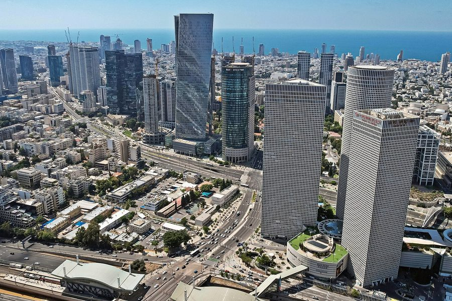
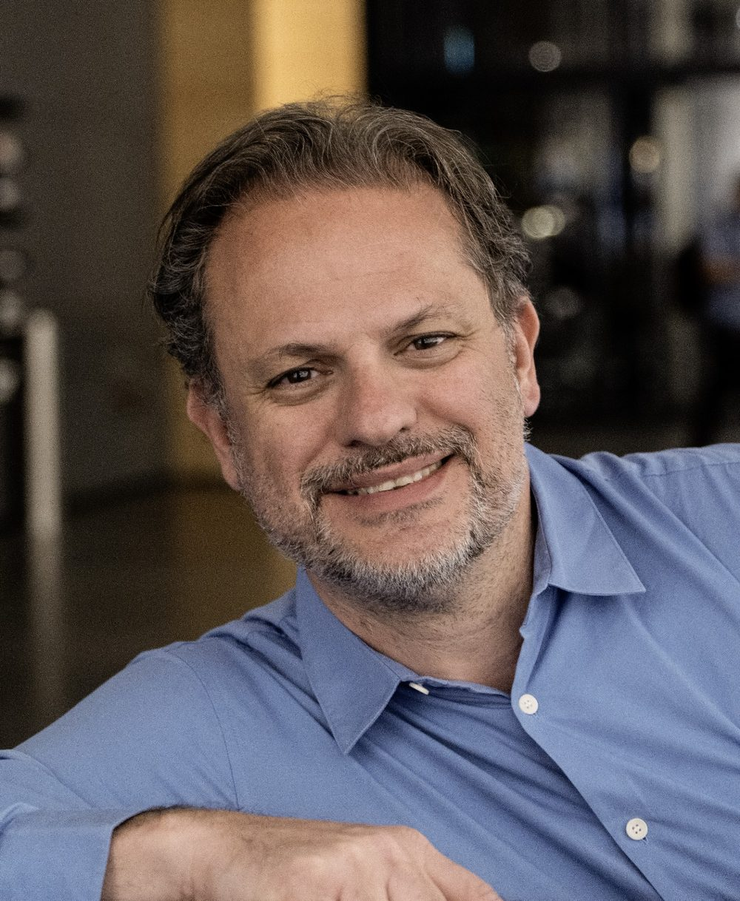
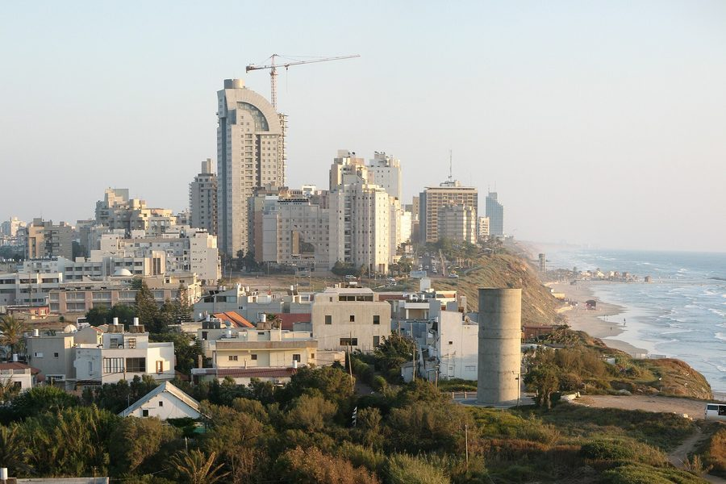
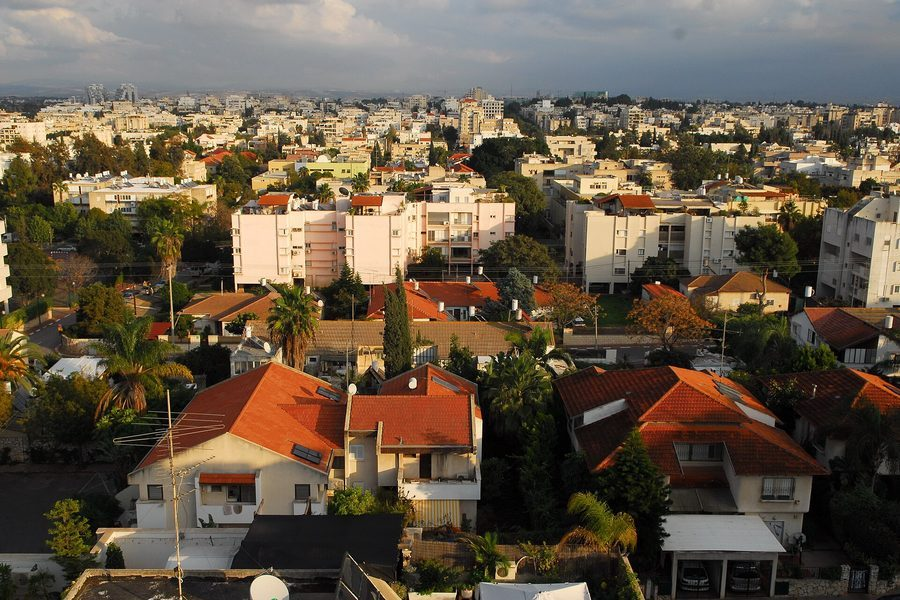
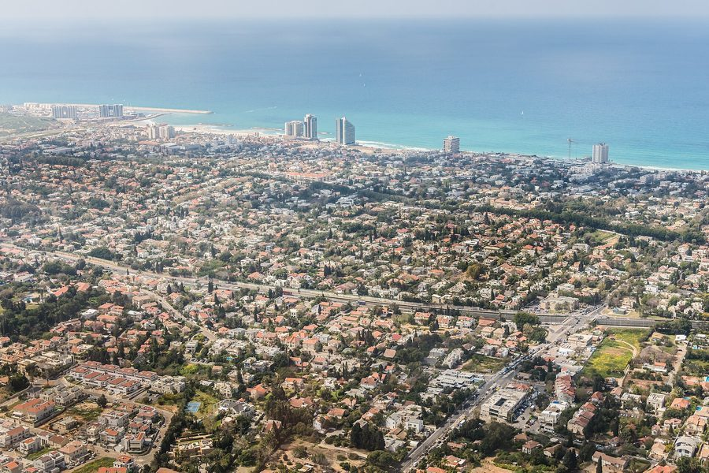
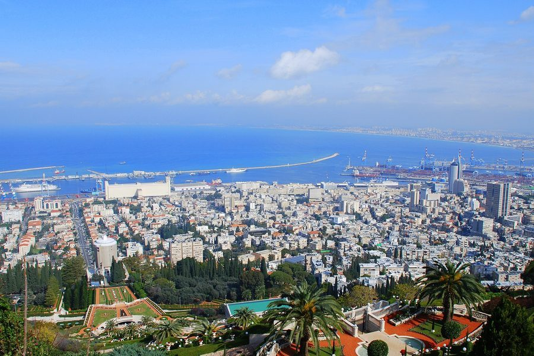
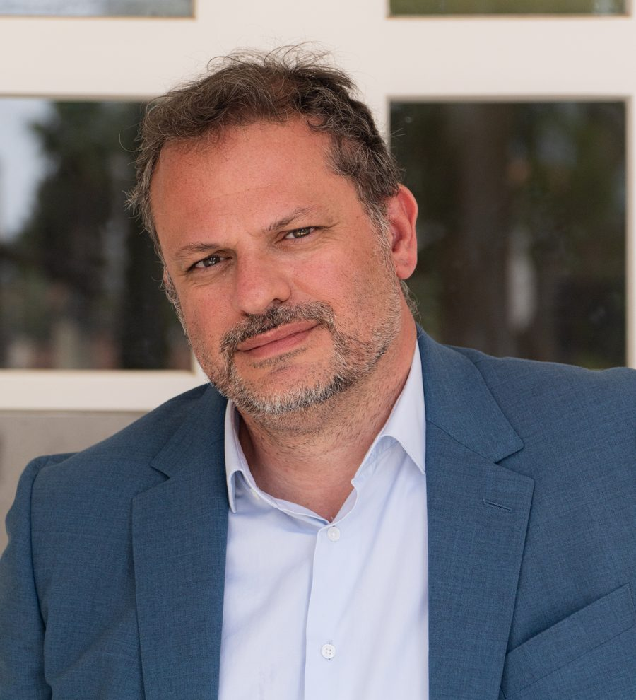

Vidéos · réponses
Je suis entrepreneur ou dirigeant
Conserver ma société, me rémunérer, distribuer des dividendes, organiser la trésorerie, envisager une cession…
Découvrir les enjeuxRésidence fiscale, société, revenus, patrimoine, exit tax : identifiez les décisions à anticiper pour organiser votre installation en toute sécurité.

CBA – Cabinet Benayoun & Associés se distingue dans la huitième édition du Palmarès LE POINT des meilleurs cabinets d'avocats en France pour l'année 2026, avec la note maximale de 5 étoiles parmi les meilleurs cabinets d'avocats fiscalistes français.
Accédez directement aux informations qui concernent votre situation en regardant nos courtes vidéos.

Conserver ma société, me rémunérer, distribuer des dividendes, organiser la trésorerie, envisager une cession…
Découvrir les enjeux
Pensions françaises et étrangères, placements, revenus locatifs, logement en France…
Voir les principales questions
Immobilier, SCI, donations, succession, enfants en France, transmission…
Identifier les points d'attentionLes principales étapes, de la réflexion initiale à votre installation.
Les questions essentielles et le calendrier des principales démarches.
Être prévenu de sa parutionChaque mois, un webinaire en direct sur la fiscalité de l'alyah. Il reste ensuite disponible ici, en replay.



CBA société d'avocats accompagne, conseille et défend les entreprises, leur dirigeant et les particuliers. Nous intervenons en droit fiscal, droit des sociétés, droit commercial et droit social.
Le cabinet d'avocats détient un réel savoir-faire en matière d'expatriation fiscale et d'accompagnement fiscal des dirigeants d'entreprises françaises.
Chaque client du cabinet CBA est pris en charge par un avocat dit “référent” qui le suivra tout au long de la collaboration. Cela permet d'assurer la cohérence du suivi juridique des affaires mais également de proposer des solutions adaptées et non standardisées.
Chaque situation est différente. Nous vous aidons à identifier les enjeux prioritaires, comparer les options et sécuriser la mise en œuvre de vos décisions.